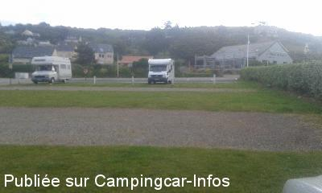
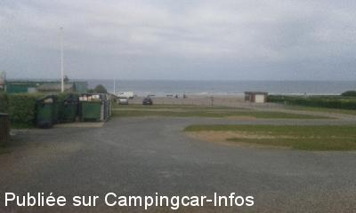
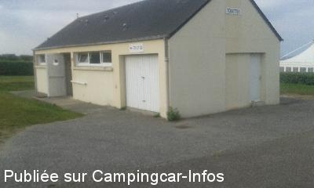
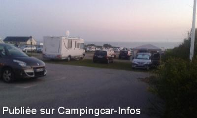
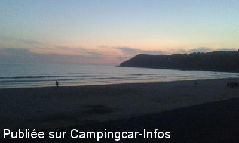

APCC = parkings réservés camping-cars sans services de :
LES PIEUX
(N° 654)
Accès/adresse :
Route du Fort
Parking de la Plage de Sciotot
50340 LES PIEUX
Parking de la Plage de Sciotot
50340 LES PIEUX
Latitude : (Nord) 49.507167° Décimaux ou 49° 30′ 25′′
Longitude : (Ouest) -1.847121° Décimaux ou -1° 50′ 49′′
Tarif : Gratuit
Services :
Poubelles
Cabine téléphonique
Sanitaires avec douches à proximité
Autres informations :
Ouvert toute l'année
6 emplacements sur asphalte, réservés aux C-C
Stationnement limité à 24 H
En bordure de route
mairie@lespieux.fr
http://www.normandie-tourisme.fr/Aire-de-stationnement--reglementee-/HPA/LES-PIEUX/fiche-HPANOR050FS0006U-1.html

Le 25/05/2015 par fondromain

Le 25/05/2015 par fondromain

Le 25/05/2015 par fondromain

Le 25/05/2015 par fondromain

Le 25/05/2015 par fondromain
de
fondromain
le 25/05/2015 :
Nous y avons passé de nuit du 24 mai 2015
La nuit a été très calme malgré la proximité de la route peu fréquentée. les sanitaires à proximité sont très propre étonnant pour des sanitaires publics !!! malheureusement les douches était froide mais il faut rappeler que tout est gratuit la plage à proximité est superbe et coucher de soleil magnifique. pour la restauration au choix, restaurant ou baraque à frites avec animations musicales (groupe de jazz)très tres sympa
Bravo et merci à la commune
Nous y avons passé de nuit du 24 mai 2015
La nuit a été très calme malgré la proximité de la route peu fréquentée. les sanitaires à proximité sont très propre étonnant pour des sanitaires publics !!! malheureusement les douches était froide mais il faut rappeler que tout est gratuit la plage à proximité est superbe et coucher de soleil magnifique. pour la restauration au choix, restaurant ou baraque à frites avec animations musicales (groupe de jazz)très tres sympa
Bravo et merci à la commune